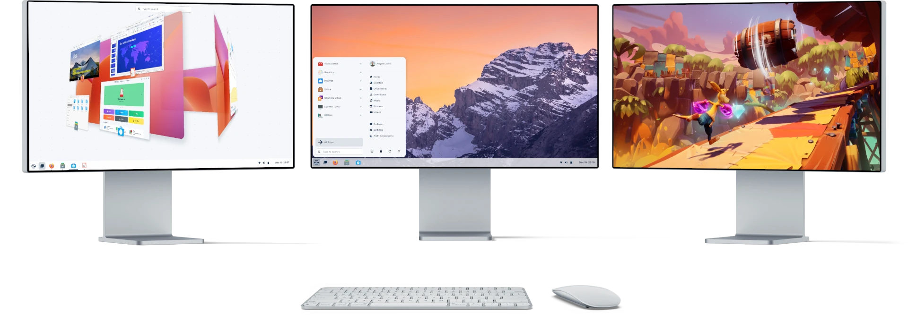
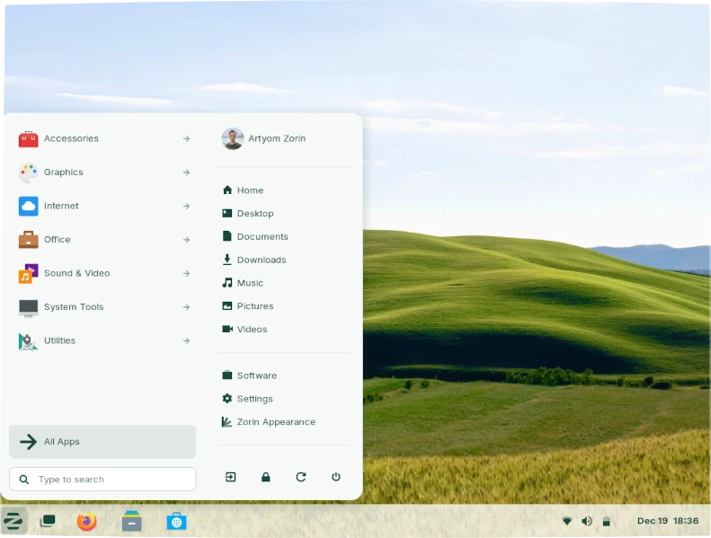

Make your computer
Faster
Zorin OS is the alternative to Windows and macOS designed to make
your computer faster, more powerful, secure, and privacy-respecting.

A familiar desktop you
already know how to use.
Zorin OS is designed to be easy, so you don't need to learn anything to get
started. The Zorin Appearance app lets you change the desktop layout to feel like
the environment you're familiar with, whether it's Windows, macOS, or Linux.
More Speed.
